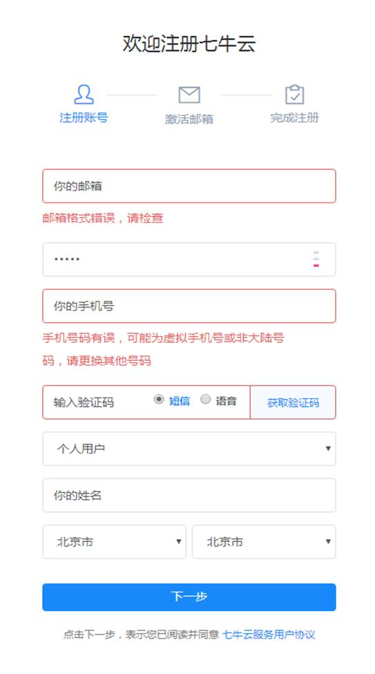

学习目标
能够实现购销合同模块下货物的CRUD
能够完成货物的CRUD（业务）
能够理解细粒度权限控制及分类
能够使用七牛云上传图片
独立完成货物上传功能
1. 货物与附件管理 需求分析
首先，我们需要明确的是，购销合同其本质就是一个约定，即甲方从乙方处购买商品的种类，数量，价格等等。而商品是什么呢，它就是我们的货物，所以一份购销合同可以对应多款货物，即购销合同和货物之间是一对多的关系。
其次，我们所说的货物只是商品本身，而货物所需的包装盒，内衬板，防震垫等等都是货物的附属物品，即附件。那么附件和货物之间有什么关系呢？一款货物可能有一个或多个附件，所以货物和附件间的关系也是一对多。
最后，附件会不会影响购销合同呢？答案是肯定的，在计算购销合同的价格时，应该是货物的单价乘以数量，同时加上附件的单价乘以数量。所以我们在做货物和附件的删减时，需要同时更新用于分散计算的购销合同总价格。
特殊说明，无论是货物还是附件，它们都应该有生产厂家，所以货物和附件与生产厂家的关系是多对一，也就是每款货物或者每个附件都有一个生产厂家，而一个厂家可以生产多款货物或者多种附件。
购销合同
pro_num 货物的种类数据
ext_num 附件的种类数据
total_amount 购销合同的总价 = 货物的总价+附件的总价 ， 是在添加、删除、修改货物或者附件的时候动态计算.
货物( co_contract_product 购销合同与货物也是一对多)
contract_id 所属的购销合同，外键
cnumber 货物的数量 1
price 货物的单价 100
amount 货物的总价
附件（co_ext_cproduct 货物与附件的关系也是一对多）
contract_product_id 所属的货物，外键
contract_id 所属的购销合同
cnumber 附件的数量
price 附件的单价
amount 附件的总价
---------------------------------------------------------------------
增加货物
1. 计算货物的总价
2. 插入货物的数据
3. 重新计算购销合同的总价 购销合同总价= 购销合同原价格+货物的总价
4. 更新购销合同的种类数量 购销合同的种类数量 = 购销合同的原种类数量+1
5. 更新购销合同
修改货物
1. 计算货物的总价
2. 更新货物数据
3. 重新计算购销合同的总价 购销合同总价 = 购销合同原价格- 货物原本价格+ 当前的新总价
4. 更新购销合同
删除货物
1. 删除货物
2. 删除该货物对应的附件
3. 更新购销合同的总价 更新购销合同 = 购销合同原总价-被删除货物的总价- 附件的总价
4. 更新购销合同的货物数量
5. 更新购销合同的附件数量
6. 更新购销合同
2. 货物与附件管理 实体类分析
购销合同实体类
public class Contract extends BaseEntity {
....
private Double totalAmount;//总金额=货物的总金额+附件的总金额 冗余字段，为了进行分散计算
private Integer proNum; //货物数量
private Integer extNum; //附件数量
}货物实体类
public class ContractProduct extends BaseEntity implements Serializable {
....
private Integer cnumber; //数量
private Double price; //单价
private Double amount; //总金额，冗余
private String contractId; //合同号
}附件实体类
public class ExtCproduct extends BaseEntity implements Serializable{
....
private Integer cnumber; //数量
private Double price; //单价
private Double amount; //总金额 自动计算: 数量x单价
private String contractProductId;//所属货物id
private String contractId;//购销合同id，冗余
}3. 货物管理 货物列表
需求
第一步：购销合同列表点击货物

第二步：进入product-list.jsp页面，注意这个页面需要下拉列表显示所有生产厂家、以及合同的所有货物。
步骤
- export_cargo_service货运服务工程，需要编写FactoryServiceImpl服务实现类。
- export_cargo_service货运服务工程，需要编写ContractProductServiceImpl服务实现类。
- 创建ContractProductController, 提供进入货物添加和列表页面的方法。
- 修改product-list.jsp页面
实现
export_cargo_service货运服务工程，需要编写FactoryServiceImpl服务实现类。
package cn.itcast.service.cargo.impl; import cn.itcast.dao.cargo.FactoryDao; import cn.itcast.domain.cargo.Factory; import cn.itcast.domain.cargo.FactoryExample; import cn.itcsat.service.cargo.FactoryService; import com.alibaba.dubbo.config.annotation.Service; import com.github.pagehelper.PageHelper; import com.github.pagehelper.PageInfo; import org.springframework.beans.factory.annotation.Autowired; import java.util.Date; import java.util.List; import java.util.UUID; @Service public class FactoryServiceImpl implements FactoryService { @Autowired private FactoryDao factoryDao; /* 工厂分页查询 */ @Override public PageInfo<Factory> findByPage(FactoryExample factoryExample, int pageNum, int pageSize) { PageHelper.startPage(pageNum,pageSize); //查询数据 List<Factory> factoryList = factoryDao.selectByExample(factoryExample); //得到工厂页面 PageInfo<Factory> pageInfo = new PageInfo<>(factoryList); return pageInfo; } /* 工厂条件查询 */ @Override public List<Factory> findAll(FactoryExample factoryExample) { List<Factory> factoryList = factoryDao.selectByExample(factoryExample); return factoryList; } /* 根据id查询工厂 */ @Override public Factory findById(String id) { return factoryDao.selectByPrimaryKey(id); } /* 添加工厂 */ @Override public void save(Factory factory) { factory.setId(UUID.randomUUID().toString()); //有两个字段不能为空 factory.setCreateTime(new Date()); factory.setUpdateTime(new Date()); factoryDao.insertSelective(factory); } /* 更新工厂 */ @Override public void update(Factory factory) { //修改更新的时间 factory.setUpdateTime(new Date()); factoryDao.updateByPrimaryKeySelective(factory); } /* 根据主键删除工厂 */ @Override public void delete(String id) { factoryDao.deleteByPrimaryKey(id); } }export_cargo_service货运服务工程，需要编写ContractProductServiceImpl服务实现类。
package cn.itcast.service.cargo.impl; import cn.itcast.dao.cargo.ContractProductDao; import cn.itcast.domain.cargo.ContractProduct; import cn.itcast.domain.cargo.ContractProductExample; import cn.itcsat.service.cargo.ContractProductService; import com.alibaba.dubbo.config.annotation.Service; import com.github.pagehelper.PageHelper; import com.github.pagehelper.PageInfo; import org.springframework.beans.factory.annotation.Autowired; import java.util.Date; import java.util.List; import java.util.UUID; @Service public class ContractProductServiceImpl implements ContractProductService { @Autowired private ContractProductDao contractProductDao; /* 货物分页查询 */ @Override public PageInfo<ContractProduct> findByPage(ContractProductExample contractProductExample, int pageNum, int pageSize) { PageHelper.startPage(pageNum,pageSize); //查询数据 List<ContractProduct> contractProductList = contractProductDao.selectByExample(contractProductExample); //得到货物页面 PageInfo<ContractProduct> pageInfo = new PageInfo<>(contractProductList); return pageInfo; } /* 货物条件查询 */ @Override public List<ContractProduct> findAll(ContractProductExample contractProductExample) { List<ContractProduct> contractProductList = contractProductDao.selectByExample(contractProductExample); return contractProductList; } /* 根据id查询货物 */ @Override public ContractProduct findById(String id) { return contractProductDao.selectByPrimaryKey(id); } /* 添加货物 */ @Override public void save(ContractProduct contractProduct) { contractProduct.setId(UUID.randomUUID().toString()); //有两个字段不能为空 contractProduct.setCreateTime(new Date()); contractProduct.setUpdateTime(new Date()); contractProductDao.insertSelective(contractProduct); } /* 更新货物 */ @Override public void update(ContractProduct contractProduct) { //修改更新的时间 contractProduct.setUpdateTime(new Date()); contractProductDao.updateByPrimaryKeySelective(contractProduct); } /* 根据主键删除货物 */ @Override public void delete(String id) { contractProductDao.deleteByPrimaryKey(id); } }创建ContractProductController, 提供进入货物添加和列表页面的方法。
图1：
图2：
@Controller @RequestMapping("/cargo/contractProduct") public class ContractProductController extends BaseController { @Reference private ContractProductService contractProductService; @Reference private FactoryService factoryService; /* 作用：进入货物列表页面 url: /cargo/contractProduct/list.do?contractId=dd63eb3c-6d4e-4a85-9c37-fcfda1998c1d 参数：购销合同id 返回值 : 货物列表页面 */ @RequestMapping("/list") public String list(String contractId,@RequestParam(defaultValue = "1") Integer pageNum,@RequestParam(defaultValue = "5") Integer pageSize){ //1. 查询当前购销合同下的货物数据,得到pageInfo ContractProductExample contractProductExample = new ContractProductExample(); //由于我们只需要查询当前购销合同的货物 contractProductExample.createCriteria().andContractIdEqualTo(contractId); PageInfo<ContractProduct> pageInfo = contractProductService.findByPage(contractProductExample, pageNum, pageSize); request.setAttribute("pageInfo",pageInfo); //2. 查询生成货物的厂家 FactoryExample factoryExample = new FactoryExample(); factoryExample.createCriteria().andCtypeEqualTo("货物"); List<Factory> factoryList = factoryService.findAll(factoryExample); request.setAttribute("factoryList",factoryList); //3. 把购销合同id存储到域中 request.setAttribute("contractId",contractId); //请求转到到页面 return "cargo/product/product-list"; } }检查product-list.jsp页面
小结
==易错点：来到货物列表页面一定需要带上contractId，否则添加货物的时候不知道该货物是哪个购销合同的。==
4. 货物管理 货物添加
需求
在product-list.jsp页面，点击保存后，在货物列表中可以查看新增的货物。
注意： 货物添加后，重定向到当前页面，且购销合同的id不能丢失。
步骤
- ContractProductController添加edit()方法
- 修改service货物添加方法
- 测试
实现
ContractProductController添加edit()方法
@Controller @RequestMapping("/cargo/contractProduct") public class ContractProductController extends BaseController { @Reference private ContractProductService contractProductService; @Reference private FactoryService factoryService; /* 作用：添加货物，更新货物 url: /contractProduct/edit.do 参数：ContractProduct 货物对象信息 返回值 : 货物列表页面 */ @RequestMapping("/edit") public String edit(ContractProduct contractProduct){ //货物的创建人 contractProduct.setCreateBy(getLoginUser().getId()); //货物的创建人所属的部门 contractProduct.setCreateDept(getLoginUser().getDeptId()); //货物的创建人所属的企业id contractProduct.setCompanyId(getLoginUserCompanyId()); //货物的创建人所属的企业名称 contractProduct.setCompanyName(getLoginUserCompanyName()); if(StringUtils.isEmpty(contractProduct.getId())){ //判断一个变量是否为空串,相当于上面的语句 //添加 contractProductService.save(contractProduct); }else{ //更新 contractProductService.update(contractProduct); } return "redirect:/cargo/contractProduct/list.do?contractId="+contractProduct.getContractId(); //访问上面的list方法 } }修改service货物添加方法
package cn.itcast.service.cargo.impl; import cn.itcast.dao.cargo.ContractDao; import cn.itcast.dao.cargo.ContractProductDao; import cn.itcast.domain.cargo.Contract; import cn.itcast.domain.cargo.ContractProduct; import cn.itcast.domain.cargo.ContractProductExample; import cn.itcast.service.cargo.ContractProductService; import com.alibaba.dubbo.config.annotation.Service; import com.github.pagehelper.PageHelper; import com.github.pagehelper.PageInfo; import org.springframework.beans.factory.annotation.Autowired; import java.util.Date; import java.util.List; import java.util.UUID; @Service public class ContractProductServiceImpl implements ContractProductService { @Autowired private ContractProductDao contractProductDao; @Autowired private ContractDao contractDao; /* 添加货物 */ @Override public void save(ContractProduct contractProduct) { contractProduct.setId(UUID.randomUUID().toString()); //有两个字段不能为空 contractProduct.setCreateTime(new Date()); contractProduct.setUpdateTime(new Date()); // 1. 计算货物的总价 double amount = 0; //由于cnumber与price我们都使用包装类所以可以使用null去判断 if(contractProduct.getCnumber()!=null && contractProduct.getPrice()!=null){ amount = contractProduct.getCnumber()*contractProduct.getPrice(); contractProduct.setAmount(amount); } // 2. 插入货物的数据 contractProductDao.insertSelective(contractProduct); // 3. 重新计算购销合同的总价 购销合同总价= 购销合同原价格+货物的总价 Contract contract = contractDao.selectByPrimaryKey(contractProduct.getContractId()); if(contract.getTotalAmount()!=null) { contract.setTotalAmount(contract.getTotalAmount() + amount); }else{ //该购销合同是第一次添加货物 contract.setTotalAmount(amount); } // 4. 更新购销合同的种类数量 购销合同的种类数量 = 购销合同的原种类数量+1 if(contract.getProNum()!=null){ contract.setProNum(contract.getProNum()+1); }else{ contract.setProNum(1); } // 5. 更新购销合同 contractDao.updateByPrimaryKeySelective(contract); } }测试
图1：
图2：
图3：点击保存
图4：查看列表
易错点
5. 货物管理 货物修改(1) 进入修改页面
需求
在product-list.jsp页面，点击修改
进入product-update.jsp 页面
步骤
第一步：检查product-list.jsp点击修改时候，超链接提交地址
第二步：控制器添加进入product-update.jsp的方法
实现
第一步：检查超链接地址
第二步：控制器添加toUpdate()方法
package cn.itcast.web.controller.cargo;
import cn.itcast.domain.cargo.ContractProduct;
import cn.itcast.domain.cargo.ContractProductExample;
import cn.itcast.domain.cargo.Factory;
import cn.itcast.domain.cargo.FactoryExample;
import cn.itcast.service.cargo.ContractProductService;
import cn.itcast.service.cargo.FactoryService;
import cn.itcast.web.controller.BaseController;
import com.alibaba.dubbo.config.annotation.Reference;
import com.github.pagehelper.PageInfo;
import org.springframework.stereotype.Controller;
import org.springframework.ui.Model;
import org.springframework.util.StringUtils;
import org.springframework.web.bind.annotation.RequestMapping;
import org.springframework.web.bind.annotation.RequestParam;
import java.util.List;
@Controller
@RequestMapping("/cargo/contractProduct")
public class ContractProductController extends BaseController {
@Reference
private ContractProductService contractProductService;
@Reference
private FactoryService factoryService;
/*
作用 ： 进入更新货物的页面
url : /cargo/contractProduct/toUpdate.do?id=093226d4-24a2-4deb-90d5-5a2fadea10a9
参数 : 货物id
返回值 :product-update
*/
@RequestMapping("/toUpdate")
public String toUpdate(String id){
//1. 根据货物的id查找货物
ContractProduct contractProduct = contractProductService.findById(id);
//2. 存储到request域中
request.setAttribute("contractProduct",contractProduct);
//3. 生成货物的厂家
FactoryExample factoryExample = new FactoryExample();
factoryExample.createCriteria().andCtypeEqualTo("货物");
List<Factory> factoryList = factoryService.findAll(factoryExample);
request.setAttribute("factoryList",factoryList);
//4. 请求转发到product-update页面
return "cargo/product/product-update";
}
}
注意
6. 货物管理 货物修改(2) 修改保存
需求
点击保存
页面提交参数分析
步骤
- 检查product-update.jsp，保存按钮提交地址（已完成）
- 检查ContractProductController处理更新请求方法（已完成）
- 修改ContractProductServiceImpl中的update()方法
- 测试
实现
检查product-update.jsp，保存按钮提交地址（已完成）
检查ContractProductController处理更新请求方法（已完成）
修改ContractProductServiceImpl中的update()方法
package cn.itcast.service.cargo.impl; import cn.itcast.dao.cargo.ContractDao; import cn.itcast.dao.cargo.ContractProductDao; import cn.itcast.domain.cargo.Contract; import cn.itcast.domain.cargo.ContractProduct; import cn.itcast.domain.cargo.ContractProductExample; import cn.itcast.service.cargo.ContractProductService; import com.alibaba.dubbo.config.annotation.Service; import com.github.pagehelper.PageHelper; import com.github.pagehelper.PageInfo; import org.springframework.beans.factory.annotation.Autowired; import java.util.Date; import java.util.List; import java.util.UUID; @Service public class ContractProductServiceImpl implements ContractProductService { @Autowired private ContractProductDao contractProductDao; @Autowired private ContractDao contractDao; /* 更新货物 */ @Override public void update(ContractProduct contractProduct) { //更新之前查询该货物的对象 ContractProduct oldContractProduct = contractProductDao.selectByPrimaryKey(contractProduct.getId()); //修改更新的时间 contractProduct.setUpdateTime(new Date()); // 1. 计算货物的总价 double amount = 0; //由于cnumber与price我们都使用包装类所以可以使用null去判断 if(contractProduct.getCnumber()!=null && contractProduct.getPrice()!=null){ amount = contractProduct.getCnumber()*contractProduct.getPrice(); contractProduct.setAmount(amount); } // 2. 更新货物数据 contractProductDao.updateByPrimaryKeySelective(contractProduct); // 3. 重新计算购销合同的总价 购销合同总价 = 购销合同原价格- 货物原本价格+ 当前的新总价 Contract contract = contractDao.selectByPrimaryKey(contractProduct.getContractId()); contract.setTotalAmount(contract.getTotalAmount()- oldContractProduct.getAmount()+amount); // 4. 更新购销合同 contractDao.updateByPrimaryKeySelective(contract); } }
7. 货物管理 货物删除
需求
- 实现删除货物：
- 删除货物时候，同时需要删除货物下的附件
步骤
- ContractProductController添加删除方法
- 修改ContractProductServiceImpl中的delete()方法
实现
ContractProductController添加删除方法
package cn.itcast.web.controller.cargo; import cn.itcast.domain.cargo.ContractProduct; import cn.itcast.domain.cargo.ContractProductExample; import cn.itcast.domain.cargo.Factory; import cn.itcast.domain.cargo.FactoryExample; import cn.itcast.service.cargo.ContractProductService; import cn.itcast.service.cargo.FactoryService; import cn.itcast.web.controller.BaseController; import com.alibaba.dubbo.config.annotation.Reference; import com.github.pagehelper.PageInfo; import org.springframework.stereotype.Controller; import org.springframework.ui.Model; import org.springframework.util.StringUtils; import org.springframework.web.bind.annotation.RequestMapping; import org.springframework.web.bind.annotation.RequestParam; import java.util.List; @Controller @RequestMapping("/cargo/contractProduct") public class ContractProductController extends BaseController { @Reference private ContractProductService contractProductService; @Reference private FactoryService factoryService; /* 作用 ：删除 url :/contractProduct/delete.do?id=02e1da04-43f8-42e1-a4c2-66e162c6f4a5&contractId=购销合同的id 参数 : 货物的id，购销合同的id 返回值 : 货物列表 */ @RequestMapping("/delete") public String delete(String id,String contractId){ contractProductService.delete(id); return "redirect:/cargo/contractProduct/list.do?contractId="+contractId; } }
修改ContractProductServiceImpl中的delete()方法
package cn.itcast.service.cargo.impl; import cn.itcast.dao.cargo.ContractDao; import cn.itcast.dao.cargo.ContractProductDao; import cn.itcast.dao.cargo.ExtCproductDao; import cn.itcast.domain.cargo.*; import cn.itcast.service.cargo.ContractProductService; import com.alibaba.dubbo.config.annotation.Service; import com.github.pagehelper.PageHelper; import com.github.pagehelper.PageInfo; import org.springframework.beans.factory.annotation.Autowired; import java.util.Date; import java.util.List; import java.util.UUID; @Service public class ContractProductServiceImpl implements ContractProductService { @Autowired private ContractProductDao contractProductDao; @Autowired private ContractDao contractDao; @Autowired private ExtCproductDao extCproductDao; /* 根据主键删除货物 */ @Override public void delete(String id) { //找到被删除货物 ContractProduct dbContractProduct = contractProductDao.selectByPrimaryKey(id); // 1. 删除货物 contractProductDao.deleteByPrimaryKey(id); // 2. 删除该货物对应的附件 //找到货物对应的附件 ExtCproductExample extCproductExample = new ExtCproductExample(); //条件：该货物的附件 extCproductExample.createCriteria().andContractProductIdEqualTo(id); List<ExtCproduct> extCproductList = extCproductDao.selectByExample(extCproductExample); //遍历附件，逐个删除 double totalExtAmount = 0; if(extCproductList!=null){ for (ExtCproduct extCproduct : extCproductList) { //把附件的总价统计 totalExtAmount+=extCproduct.getAmount(); extCproductDao.deleteByPrimaryKey(extCproduct.getId()); } } // 3. 更新购销合同的总价 更新购销合同 = 购销合同原总价-被删除货物的总价- 附件的总价 Contract contract = contractDao.selectByPrimaryKey(dbContractProduct.getContractId()); contract.setTotalAmount(contract.getTotalAmount()-dbContractProduct.getAmount()-totalExtAmount); // 4. 更新购销合同的货物数量 contract.setProNum(contract.getProNum()-1); // 5. 更新购销合同的附件数量 if(extCproductList!=null) { contract.setExtNum(contract.getExtNum() - extCproductList.size()); } // 6. 更新购销合同 contractDao.updateByPrimaryKeySelective(contract); } }
8. 购销合同细粒度权限控制 需求分析
概述
在很多应用行业里面，都对数据的权限做了特别的声明，如对于销售，财务的数据，它们是非常敏感的，因此要求对数据权限进行控制，这就是细粒度权限控制。总之一句话细粒度权限控制是对数据的访问进行控制。
对于基于集团性的应用系统而言，就更多需要控制好各自公司的数据了。如默认只能看本公司、或者本部门的数据，对于特殊的领导，可能需要跨部门的数据，因此不能硬编码那个领导该访问哪些数据，需要进行后台的权限和数据权限的控制为佳，接下来主要针对这个特点，对这个数据权限的功能模块进行探讨，并以购销合同为案例进行剖析，介绍实际项目中对数据权限的控制管理。
细粒度权限控制：是指对数据的访问控制。不同的用户查看不同的数据
如何实现？ 硬编码。
需求
- 如果是普通用户登陆，查看购销合同，只能查看自己创建的购销合同。（degree=4）
.。
- 如果是部门管理者登陆，可以查看自己部门下所有员工创建的购销合同。（degree=3）
- 如果是管理所有下属部门和人员 登录，可以查看当前部门下所有员工创建的购销合同、以及当前部门的所有子部门创建的购销合同。（degree=2）
-- degree=4 普通员工 ，普通员工只能查看自己签的购销合同
SELECT * FROM co_contract WHERE create_by='当前用户的id'
-- degree=3 部门经理 , 可以查看本部门的所有购销合同
SELECT * FROM co_contract WHERE create_dept='当前用户所属部门'
-- degree=2 大区经理 ,可以查看本部门以及下属部门的购销合同
SELECT * FROM co_contract WHERE create_dept IN (本部门，下属部门)
-- degree=1 系统管理员 看该公司全部
SELECT * FROM co_contract WHERE company_id ='当前登陆者所在公司'9. 购销合同细粒度权限控制 管理本部门
目标
实现普通员工登陆，只能查看自己创建的购销合同
实现部门管理者登陆，可以查看自己部门下所有员工创建的购销合同
系统管理员
实现目标需求，涉及的SQL语句
-- 1) 用户的degree=4普通用户， 只查询自己创建的购销合同 SELECT * FROM co_contract WHERE create_by='登陆用户id' -- 2) 用户的degree=3部门管理者， 可以看到本部门员工创建的购销合同 SELECT * FROM co_contract WHERE create_dept='登陆用户的部门id'
修改购销合同列表方法（展示合同列表之前先做判断用户的等级）
截图：
截图代码：
import cn.itcast.domain.cargo.Contract;
import cn.itcast.domain.cargo.ContractExample;
import cn.itcast.domain.system.User;
import cn.itcast.service.cargo.ContractService;
import cn.itcast.web.controller.BaseController;
import com.alibaba.dubbo.config.annotation.Reference;
import com.github.pagehelper.PageInfo;
import org.apache.shiro.authz.annotation.RequiresPermissions;
import org.springframework.stereotype.Controller;
import org.springframework.ui.Model;
import org.springframework.util.StringUtils;
import org.springframework.web.bind.annotation.RequestMapping;
import org.springframework.web.bind.annotation.RequestParam;
import java.util.Date;
@Controller
@RequestMapping("/cargo/contract")
public class ContractController extends BaseController {
@Reference
private ContractService contractService;
@RequestMapping("/list")
public String list(@RequestParam(defaultValue = "1") Integer pageNum,@RequestParam(defaultValue = "5") Integer pageSize){
ContractExample contractExample = new ContractExample();
//根据购销合同的创建时间去排序
contractExample.setOrderByClause("create_time desc"); //desc 降序、 asc 升序
ContractExample.Criteria criteria = contractExample.createCriteria();
//购销合同细粒度的权限控制
//获取当前登陆者的等级
Integer degree = getLoginUser().getDegree();
if(degree==4){
//普通员工
criteria.andCreateByEqualTo(getLoginUser().getId());
}else if(degree==3){
//部门经理
criteria.andCreateDeptEqualTo(getLoginUser().getDeptId());
}else if(degree==2){
//大区经理
}else if (degree==1){
//系统管理员
criteria.andCompanyIdEqualTo(getLoginUser().getCompanyId());
}
PageInfo<Contract> pageInfo = contractService.findByPage(contractExample, pageNum, pageSize);
//存储到请求域中
request.setAttribute("pageInfo",pageInfo);
//请求转到到页面
return "cargo/contract/contract-list";
}
}10. 购销合同细粒度权限控制 管理下属部门和人员
目标
需求：
对于权限比较大的用户，登陆系统后，可以查看当前部门下所有员工创建的购销合同、以及当前部门的所有子部门创建的购销合同。
部门表结构如下：
数据库查询:定义函数
查询需求：
查询当前部门和当前部门下所有子部门的id。
-- degree=2 大区经理 ,可以查看本部门以及下属部门的购销合同
-- find_in_set(字段名,字符串) 实现 find_in_set相当于java中字符串的contains方法一样.
SELECT * FROM co_contract WHERE FIND_IN_SET(create_dept,'100,100101,3d00290a-1af0-4c28-853e-29fbf96a2722,73f3fa2f-66a2-4d16-8306-78d89003031b,8f014817-dba4-456d-880c-6f7a027fa200,aeb1c7d3-9a54-4f73-b0ec-0325b83aef45')
-- in语句的实现
SELECT * FROM co_contract WHERE create_dept IN ('100','100101',
'3d00290a-1af0-4c28-853e-29fbf96a2722','73f3fa2f-66a2-4d16-8306-78d89003031b','8f014817-dba4-456d-880c-6f7a027fa200','aeb1c7d3-9a54-4f73-b0ec-0325b83aef45')
-- 2.1 找到该部门的子部门(找商贸集团的子部门)
SELECT dept_id FROM pe_dept WHERE parent_id='100';
-- 2.2 GROUP_CONCAT mysql内置的函数，可以把结果拼接成一个字符串
SELECT GROUP_CONCAT(dept_id) FROM pe_dept WHERE parent_id='100';
-- getDeptChild() 这个函数就是用于查找一个部门的子孙部门
SELECT getDeptChild('100');
-- 最终执行的sql：
SELECT * FROM co_contract WHERE company_id ='1' AND FIND_IN_SET(create_dept,getDeptChild('100'))
实现需求
现在，需要编写一个函数实现查询需求：
#########################################################
# 1. 如果函数存在，就删除该函数
DROP FUNCTION IF EXISTS getDeptChild;
# 2. 通过DELIMITER指定分割符，用来标记脚本的结束位置。
DELIMITER //
# 3. 创建函数
CREATE FUNCTION getDeptChild(parentId VARCHAR(40)) -- parentId=100
RETURNS VARCHAR(4000)
BEGIN
DECLARE ptemp VARCHAR (4000); -- ptemp : 用于最终的结果
DECLARE ctemp VARCHAR (4000); ---ctemp : 用于存储本次查询的结果的
SET ptemp = '';
SET ctemp = parentId; -- ctemp=100;
-- 循环的作用就是将每次查询的结果拼接到ptemp中。
WHILE ctemp IS NOT NULL DO
IF ptemp = '' THEN
SET ptemp = CONCAT(ptemp, ctemp); -- ptemp = 100；
ELSE
SET ptemp = CONCAT(ptemp, ',', ctemp);
-- ptemp = 100，100101,3d00290a-1af0-4c28-853e-29fbf96a2722,73f3fa2f-66a2-4d16-8306-78d89003031b,8f014817-dba4-456d-880c-6f7a027fa200,aeb1c7d3-9a54-4f73-b0ec-0325b83aef45
END IF;
#group_conca保存后面符合条件的deptId
#FIND_IN_SET查询当前ctemp里是否有与parentId相等的值
SELECT GROUP_CONCAT(dept_id) INTO ctemp FROM pe_dept WHERE FIND_IN_SET(parent_id, ctemp ); -- ctmep= 100101,3d00290a-1af0-4c28-853e-29fbf96a2722,73f3fa2f-66a2-4d16-8306-78d89003031b,8f014817-dba4-456d-880c-6f7a027fa200,aeb1c7d3-9a54-4f73-b0ec-0325b83aef45
END WHILE;
RETURN ptemp;
END// #存储过程结束
DELIMITER ; #恢复语句默认的结束符号：分号
# 调用函数
SELECT getDeptChild('100');执行结果分析
图1：先查看“商贸集团”的其中一个子部门： 北京事业部，id=100101
图2：财务部的父部门是北京事业部
图3： 也就是商贸集团部门至少有2个子部门：北京事业部、财务部。
id分别是：100101、4028827c4fb633bd014fb64467470000
图4： 查询商贸集团的子部门一定会包含上面的2个id
数据库查询:实现需求
需求
对于权限比较大的用户，登陆系统后，可以查看当前部门下所有员工创建的购销合同、以及当前部门的所有子部门创建的购销合同。
实现需求
-- 查询本部门 及 子部门创建的购销合同
SELECT * FROM co_contract WHERE FIND_IN_SET(create_dept, getDeptChild('100') );功能实现
步骤：
- 修改ContractController的list方法
- 购销合同dao接口定义根据部门id（也是父部门id）查询购销合同的方法
- dao接口映射
- service接口注册方法
- service实现
- 修改控制器
- 测试
实现：
修改ContractController的list方法
@Controller @RequestMapping("/cargo/contract") public class ContractController extends BaseController { @Reference private ContractService contractService; @RequestMapping("/list") public String list(@RequestParam(defaultValue = "1") Integer pageNum,@RequestParam(defaultValue = "5") Integer pageSize){ ContractExample contractExample = new ContractExample(); //根据购销合同的创建时间去排序 contractExample.setOrderByClause("create_time desc"); //desc 降序、 asc 升序 ContractExample.Criteria criteria = contractExample.createCriteria(); //购销合同细粒度的权限控制 //获取当前登陆者的等级 Integer degree = getLoginUser().getDegree(); if(degree==4){ //普通员工 criteria.andCreateByEqualTo(getLoginUser().getId()); }else if(degree==3){ //部门经理 criteria.andCreateDeptEqualTo(getLoginUser().getDeptId()); }else if(degree==2){ //大区经理 User loginUser = getLoginUser(); PageInfo<Contract> pageInfo = contractService.findPageByDeptId(loginUser.getCompanyId(),loginUser.getDeptId(),pageNum,pageSize); request.setAttribute("pageInfo",pageInfo); return "cargo/contract/contract-list"; }else if (degree==1){ //系统管理员 criteria.andCompanyIdEqualTo(getLoginUser().getCompanyId()); } PageInfo<Contract> pageInfo = contractService.findByPage(contractExample, pageNum, pageSize); //存储到请求域中 request.setAttribute("pageInfo",pageInfo); //请求转到到页面 return "cargo/contract/contract-list"; } }在ContractService添加findPageByDeptId方法
package cn.itcast.service.cargo; import cn.itcast.domain.cargo.Contract; import cn.itcast.domain.cargo.ContractExample; import com.github.pagehelper.PageInfo; import java.util.List; /** * 购销合同模块 */ public interface ContractService { //大区经理查询购销合同 PageInfo<Contract> findPageByDeptId(String companyId, String deptId, Integer pageNum, Integer pageSize); }contractServiceImpl实现根据部门查找页面的方法
package cn.itcast.service.cargo.impl; import cn.itcast.dao.cargo.ContractDao; import cn.itcast.domain.cargo.Contract; import cn.itcast.domain.cargo.ContractExample; import cn.itcast.domain.system.Dept; import cn.itcast.service.cargo.ContractService; import com.alibaba.dubbo.config.annotation.Service; import com.github.pagehelper.PageHelper; import com.github.pagehelper.PageInfo; import org.springframework.beans.factory.annotation.Autowired; import java.util.Date; import java.util.List; import java.util.UUID; @Service public class ContractServiceImpl implements ContractService { @Autowired private ContractDao contractDao; //大区经理查询购销合同 @Override public PageInfo<Contract> findPageByDeptId(String companyId, String deptId, Integer pageNum, Integer pageSize) { PageHelper.startPage(pageNum,pageSize); //查询购销合同的数据 List<Contract> contractList = contractDao.findByDeptId(companyId,deptId); return new PageInfo<>(contractList); } }ContractDao添加findByDeptId方法
package cn.itcast.dao.cargo; import cn.itcast.domain.cargo.Contract; import cn.itcast.domain.cargo.ContractExample; import java.util.List; public interface ContractDao { //大区经理查询购销合同 List<Contract> findByDeptId(@Param("companyId") String companyId, @Param("deptId") String deptId); }ContractDao的mapper文件编写实现
<!-- ////大区经理查看购销合同
List<Contract> findByDeptId(@Param("companyId") String companyId,@Param("deptId") String deptId);
-->
<select id="findByDeptId" resultMap="BaseResultMap">
SELECT * FROM co_contract WHERE company_id =#{companyId} AND FIND_IN_SET(create_dept,getDeptChild(#{deptId}))
</select>
11. 七牛云存储（注册流程,可以不看）
关于七牛云
七牛云（隶属于上海七牛信息技术有限公司）是国内领先的以视觉智能和数据智能为核心的企业级云计算服务商，同时也是国内知名智能视频云服务商，累计为 70 多万家企业提供服务，覆盖了国内80%网民。围绕富媒体场景推出了对象存储、融合 CDN 加速、容器云、大数据平台、深度学习平台等产品、并提供一站式智能视频云解决方案。为各行业及应用提供可持续发展的智能视频云生态，帮助企业快速上云，创造更广阔的商业价值。
产品与服务
适用场景
官方SDK
https://developer.qiniu.com/kodo/sdk/1239/java
下载源码
下载地址：https://github.com/qiniu/java-sdk/releases
我们课程中使用的是7.2.17版本：
账户申请
注册账户

激活账号
实名认证
12. 七牛云存储（创建存储空间与提取秘钥信息）
新建存储空间
第一步: 登陆后，点击“管理控制台”
第二步: 添加存储空间
图1：点击立即添加
图3：创建结果
图2：域名信息
查看密钥
图1：
图2：
小结
存储空间名称： 145project
域名：qkhnsdbxr.hn-bkt.clouddn.com
AccessKey: 3Gp628H7kJH_NtQwaio-xGgMwSNEoKxd1tMr9G2a
SecretKey: M_ZOTpb1qvw-cOy7ms0NCJXxxMabYYSCqcxEBWHT
13. 入门案例
需求
在项目中需要上传图片附件，采用七牛云可以作为文件存储服务器，解决文件上传功能。
参考
图1：首页
图2：

图3：点击文档
图4： 添加依赖
图5：文件上传支持
接着，拷贝这里的代码到项目中
package cn.itcast.test;
import com.google.gson.Gson;
import com.qiniu.common.QiniuException;
import com.qiniu.http.Response;
import com.qiniu.storage.Configuration;
import com.qiniu.storage.Region;
import com.qiniu.storage.UploadManager;
import com.qiniu.storage.model.DefaultPutRet;
import com.qiniu.util.Auth;
import java.util.UUID;
public class QINiuTest {
public static void main(String[] args) {
//构造一个带指定 Region 对象的配置类
Configuration cfg = new Configuration(Region.region2()); //指定空间所在的区域，华南区是第二个
//...其他参数参考类注释
UploadManager uploadManager = new UploadManager(cfg);
//...生成上传凭证，然后准备上传
String accessKey = "3Gp628H7kJH_NtQwaio-xGgMwSNEoKxd1tMr9G2a"; //秘钥的用户名
String secretKey = "M_ZOTpb1qvw-cOy7ms0NCJXxxMabYYSCqcxEBWHT"; //秘钥密码
String bucket = "145project"; //名称空间
//如果是Windows情况下，格式是 D:\\qiniu\\test.png
String localFilePath = "H:/美女/1.jpg"; //你上传图片路径
//默认不指定key的情况下，以文件内容的hash值作为文件名
String key = UUID.randomUUID().toString()+".jpg"; //使用UUId作为文件名
Auth auth = Auth.create(accessKey, secretKey);
String upToken = auth.uploadToken(bucket);
try {
Response response = uploadManager.put(localFilePath, key, upToken);
//解析上传成功的结果
DefaultPutRet putRet = new Gson().fromJson(response.bodyString(), DefaultPutRet.class);
System.out.println(putRet.key);
System.out.println(putRet.hash);
System.out.println("图片的访问路径:http://qkhnsdbxr.hn-bkt.clouddn.com/"+key);
} catch (QiniuException ex) {
Response r = ex.response;
System.err.println(r.toString());
try {
System.err.println(r.bodyString());
} catch (QiniuException ex2) {
//ignore
}
}
}
}
14. 货物图片上传
需求
添加货物时候，选择图片进行上传：
步骤
- 项目引入七牛文件上传工具类、配置文件
- springmvc.xml中加载配置文件,配置文件解析器
- 修改控制器保存附件方法
实现
项目引入七牛文件上传工具类、配置文件,在父工程导入依赖：
<!--七牛的依赖--> <dependency> <groupId>com.qiniu</groupId> <artifactId>qiniu-java-sdk</artifactId> <version>[7.2.0, 7.2.99]</version> </dependency> <!--json的转换工具，七牛使用的--> <dependency> <groupId>com.google.code.gson</groupId> <artifactId>gson</artifactId> <version>2.8.5</version> </dependency>
2.把工具类的qiniu.properties配置文件引入，==配置的信息需要配置你自己的账号信息==

springmvc.xml中添加配置文件、配置文件上传解析器
<!--加载七牛的配置文件--> <context:property-placeholder location="classpath:properties/qiniu.properties"/> <!--创建文件解析器 文件解析器的id是固定不变--> <bean id="multipartResolver" class="org.springframework.web.multipart.commons.CommonsMultipartResolver"> <!--配置上传文件最大限制 --> <property name="maxUploadSize" value="#{1024*1024*10}"/> </bean>在货物添加与修改的时候，添加enctype=”multipart/form-data”
修改控制器保存附件方法
/*
作用：添加货物，更新货物
url: /contractProduct/edit.do
参数：ContractProduct 货物对象信息
返回值 : 货物列表页面
*/
@RequestMapping("/edit")
public String edit(ContractProduct contractProduct, MultipartFile productPhoto) throws Exception {
//货物的创建人
contractProduct.setCreateBy(getLoginUser().getId());
//货物的创建人所属的部门
contractProduct.setCreateDept(getLoginUser().getDeptId());
//货物的创建人所属的企业id
contractProduct.setCompanyId(getLoginUserCompanyId());
//货物的创建人所属的企业名称
contractProduct.setCompanyName(getLoginUserCompanyName());
if(productPhoto!=null){
//存储七牛中
String url = fileUploadUtil.upload(productPhoto); //返回图片上传成功的url
//把url路径存储到对象
contractProduct.setProductImage("http://"+url);
}
if(StringUtils.isEmpty(contractProduct.getId())){ //判断一个变量是否为空串,相当于上面的语句
//添加
contractProductService.save(contractProduct);
}else{
//更新
contractProductService.update(contractProduct);
}
return "redirect:/cargo/contractProduct/list.do?contractId="+contractProduct.getContractId(); //访问上面的list方法
}